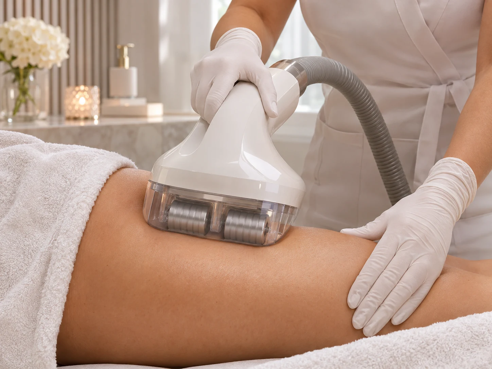

Vela Velvet
¿Qué es Vela Velvet?
Es una propuesta de tratamiento corporal no invasivo que combina trabajo mecánico sobre la piel —mediante succión y rodillos— con energía de radiofrecuencia y luz infrarroja en este tipo de equipos. La aplicación reúne masaje y calentamiento controlado de los tejidos. Se orienta al aspecto de la celulitis y al contorno corporal.
¿Qué beneficios puede ofrecer?
Puede ayudar a mejorar la apariencia de la piel de naranja y la textura de la zona tratada. La evolución se valora de forma individual y puede necesitar varias sesiones y mantenimiento. No es un tratamiento para bajar de peso ni una garantía de reducción de centímetros.
¿Cómo es una sesión?
Se evalúa la zona, el estado de la piel y la tolerancia al procedimiento. El cabezal se desplaza de manera controlada, produciendo sensación de masaje, tracción y calor. La intensidad se adapta durante el trabajo: si hay dolor o sensación de quemazón, avisá en el momento.
¿Cómo se organiza el tratamiento?
Antes de comenzar se acuerdan la zona, los objetivos y el seguimiento. La frecuencia se define según la evaluación y la respuesta de la piel; no todas las personas necesitan el mismo plan.

La información es orientativa. Los resultados y la indicación dependen de la evaluación individual.